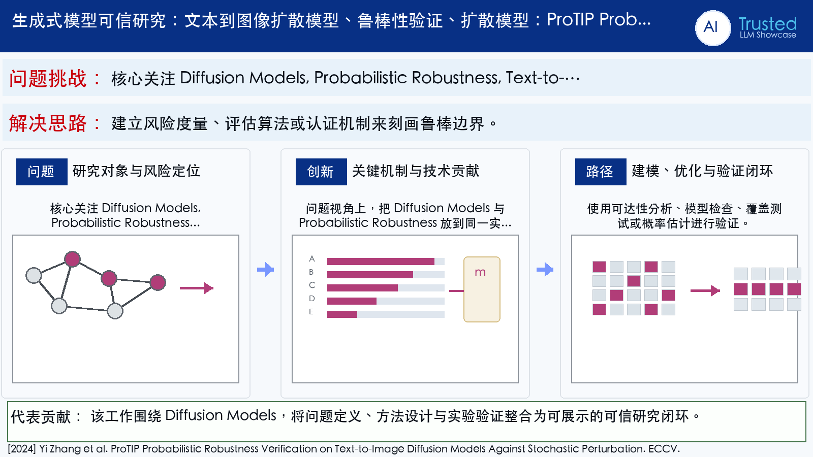

Problem
解决的问题
文本到图像扩散模型在提示词轻微变化下可能生成语义或视觉分布明显不同的结果。传统二值鲁棒性或最坏情况鲁棒性只能回答“是否存在失败样本”，很难说明在实际部署中失败概率有多高。
Research on Generative Models · 2024 · ECCV
ProTIP Probabilistic Robustness Verification on Text-to-Image Diffusion Models Against Stochastic Perturbation
Problem
文本到图像扩散模型在提示词轻微变化下可能生成语义或视觉分布明显不同的结果。传统二值鲁棒性或最坏情况鲁棒性只能回答“是否存在失败样本”，很难说明在实际部署中失败概率有多高。
Value
这篇论文适合作为生成式模型可信验证的技术起点：它给出了可量化、可复现实验、可用于防御评测的概率鲁棒性框架。
ImageGen-style Representative Page
该代表页参考学术汇报信息图风格生成，用统一的深蓝标题栏、问题/思路提示带和三段式方法卡片，总结论文的主要研究问题、创新点与解决思路。
打开原文 PDF
Technical Route
Innovation